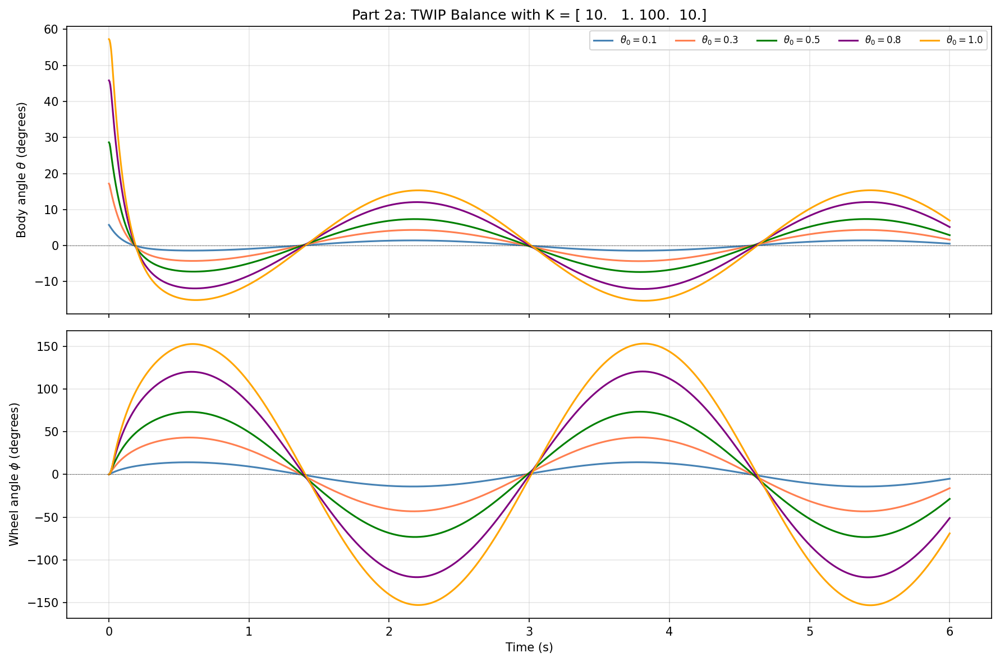

Robot Dynamics & Control Theory
From kinematics → classical control → optimal control → learning-based policies
This is the core of what I do. Understanding how robots move, how to make them move correctly, and how to make them move optimally. The learning arc runs from foundational kinematics and dynamics through classical state-space control, into trajectory optimization, and finally into learning-based approaches. Every step builds on the last.
Learning Arc: The Curriculum
Robot Dynamics & Analysis (RDA)
Forward kinematics, Denavit-Hartenberg parameters, screw theory, transformation matrices, rigid body dynamics. The mathematical language of robotics.
Modern Control Theory (MCT)
State-space modeling, controllability & observability, LQR design, PID control, Kalman filtering, stability analysis. How to make a system do what you want.
Optimal Control & RL (OCRL)
Trajectory optimization, iLQR, policy gradient methods, imitation learning, neural network policies. How to make a system do what you want — optimally.
Introduction to Robotics
Robot manipulation, workspace analysis, MATLAB Robotics Toolbox (Peter Corke). Hands-on application of kinematics to robot arm control.
Featured Project: TWIP Control System
The two-wheeled inverted pendulum (TWIP) — essentially a Segway — is a canonical problem in control theory. It's open-loop unstable, nonlinear, and requires active control to stay upright. I used it as a unified testbed across the full control theory curriculum: building three different controllers on the same physical system, comparing their performance.
System Model
Physical parameters of the simulated TWIP:
- Wheel mass (m_w): 173 g
- Pendulum mass (m_p): 653 g (826g total – wheel)
- Wheel radius (r_w): 32.3 mm
- Pendulum half-length (l_p): 43 mm
- State vector: [wheel angle, wheel angular velocity, body angle, body angular velocity]
- Simulation rate: 333 Hz
Controller Progression
LQR — Linear Quadratic Regulator
Linearize the nonlinear dynamics around the upright equilibrium. Compute optimal gain matrix K via LQR (minimizing a weighted cost on states and control effort). Simple, elegant, and effective for small perturbations.
Key insight: The control law is just u = -K*x — a single matrix multiply at each timestep. Computationally trivial. Remarkably effective near equilibrium.
Kalman Filter — State Estimation Under Noise
Real sensors are noisy. A Kalman filter estimates the true system state from noisy measurements, providing the LQR controller with clean state estimates. Combines a process model (propagation) with measurement updates (correction).
Key insight: Optimal estimation for linear Gaussian systems. The duality between LQR and Kalman filtering (both solve Riccati equations) is one of the most elegant results in control theory.
iLQR — Iterative LQR for Nonlinear Trajectories
LQR only works well near equilibrium — large angles break the linear assumption. iLQR iteratively linearizes the nonlinear dynamics along a trajectory and solves the LQR problem at each step. Handles large swings, figure-8 paths, and aggressive maneuvers.
Key insight: The computational graph is: simulate forward → compute cost → backward pass (solve Riccati) → update gains → repeat until convergence. Line search ensures stability.
Neural Network Policy — Imitation Learning
Train a small neural network to mimic the LQR controller on simulated data. The NN takes the 4D state as input and outputs the control torque. After imitation, fine-tuned directly against the survival objective.
Key insight: The NN matches LQR performance on seen conditions, but generalizes differently. Interesting failure modes appear when the NN is pushed beyond its training distribution — exactly the challenge in real-world deployment.
Simulation Results





→ Full TWIP dynamics & iLQR project | → OCRL homework — NN policy & optimization
Webots Robotics Projects: P1 → P5
Five progressive simulation projects in the Webots robotics environment, each adding a layer of complexity. The arc mirrors the theoretical curriculum — from basic vehicle control to autonomous mapping.
Vehicle Dynamics & Path Following
Basic vehicle control in a Tesla Model 3 simulation. Implementing a controller to follow waypoints at speed. Introduction to the Webots Python API and sensor integration.
Advanced Path Planning
Higher-level path planning with obstacle avoidance. Building on P1's control foundation, now planning where to go rather than just how to follow.
A* Search + LQR Controller
Integration of A* path planning (from the surgical robot project) with an LQR tracking controller. The planner outputs waypoints; the controller executes them. Planning and control working together.
EKF SLAM — The Flagship Project
Extended Kalman Filter for Simultaneous Localization and Mapping. The robot builds a map of its environment while simultaneously figuring out where it is within that map. Requires sensor fusion, nonlinear state estimation, and careful covariance management. SLAM is one of the core unsolved challenges in autonomous robotics.
Advanced Integration
Advanced robotics project combining concepts from P1–P4. Full autonomous navigation pipeline with map, plan, and execute capability.
Coursework Highlights
Selected standout assignments from the dynamics and control curriculum:
Optimal Control — Dragrace Problem
Trajectory optimization for a dragrace vehicle: find the optimal throttle and braking profile to cross the finish line as fast as possible, subject to vehicle dynamics constraints. Uses direct collocation with equality constraints.


Optimal Control & RL — TWIP Torque Analysis
Comparing linear vs. nonlinear controller torque demands across different initial conditions. Shows how LQR breaks down as conditions move away from linearization point.


Kalman Filter — State Reconstruction Under Noise
Given noisy measurements of a TWIP system, reconstruct the true state using a Kalman filter. Then feed the estimated state into the LQR controller. Demonstrates the separation principle: estimation and control can be designed independently and combined optimally.

→ Full Optimal Control Report (PDF) | → OC&RL HW1 Report (PDF)